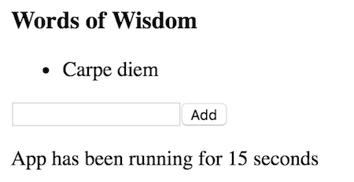
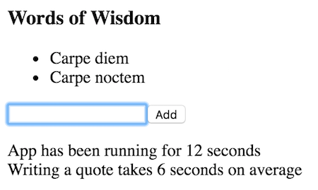

Redux level 2
Redux reduxSections in this chapter
Redux devtools
Activating the flux capacitator
We hinted earlier that the Redux model allows time travel, which can be a powerful debug tool.
This is implemented in the Redux Dev Tools, which are available as a library or a chrome plugin.
Hot module replacement means that you can make changes to your code and reload the app without losing state.
Time travel is very powerful for tracking down erroneous behaviour. It also looks really cool!
If you install the devtools as a Chrome extension, you can see for yourself in the ReduxDevtools demo. There we've simply added the dev tools to the Quotes app.
Combined reducers
The more the merrier
In an app with lots going on, the switch in our reducer can quickly grow out of control.
The remedy is to have one reducer per key in our state, and then combine these into a single, app-wide reducer!
That means we'll get a structure like this:

We will explore that by adding more state to our previous Quotes app example, which has now received a footer with passed time:

The updated app state looks like this:
let initialstate = {
quotes: ['Carpe diem'],
time: 0
};
The quotes-related data lives in state.quotes, and the time-related data lives in state.time. We'll now make one reducer for each of these keys.
Each of these reducers will act only on their part of the state, which means that we can reuse the previous reducer as a quotesReducer:
let quotesReducer = (state,action) => {
switch(action.type){
case 'ADD': return state.concat(action.text);
default: return state || initialstate.quotes;
}
};
The only change is the default initialstate return, which is customary in combined reducers.
Now we must add a timeReducer, which will be very simple:
let timeReducer = (state,action) => {
switch(action.type){
case 'TICK': return state + 1;
default: return state || initialstate.time;
}
}
Finally these reducers are combined and passed to the store:
let reducer = Redux.combineReducers({
quotes: quotesReducer,
time: timeReducer
});
let store = Redux.createStore(reducer);
Note that we no longer need to pass initialstate to createStore, since we dealt with that in the separate reducers.
You can try the augmented Quotes app in the CombinedReducers demo.
Of course, for this simple app, it would have been perfectly fine to have one reducer work on the entire state object. But as things grow more complex, having separate reducers will really increase code readability.
Caching with Reselect
Memoizing the bindings
A popular companion library to Redux is Reselect, which helps with:
- computing derived data so that you don't need to store it in Redux
- memoizing expensive lookups to make Redux more efficient
We will explore using Reselect for derived data by adding the average seconds per quote to the footer of our Quotes app:

Here are the main ideas of Reselect:
- We work with the concept of selectors.
- You make a selector for each piece of data you need from the state.
- The selectors can then be combined, and these combinations will be memoised.
In our case we need to select the number of quotes and seconds passed, from which we can then select average time per quote which we show in the app.
Here's the code for numQuotesSelector. It is a plain function that is called with the app state, and then returns the length of state.quotes:
let numQuotesSelector = state => state.quotes.length;
And timeSelector is similarly simple:
let timeSelector = state => state.time;
The interesting part comes now when we create averageSelector:
let averageSelector = Reselect.createSelector(
[numQuotesSelector,timeSelector],
(numquotes,secs) => secs / numquotes
);
Reselect.createSelector takes an array of selectors and a constructor function which is invoked with the results from the passed selectors.
We can now use averageSelector inside mapStateToProps when we create a container for the footer:
let mapStateToFooterProps = state => ({
time: state.time,
avg: averageSelector(state)
});
See the whole thing running in the Reselect demo!
Where to put logic
app or action creators or reducer?
Events pass through a Redux app like this:

...which means that we often have to ask us where to put a piece of logic -
- ain our components?
- bin our action creators?
- cin our reducers?
The components are rarely a good answer, unless the logic is only relevant to this particular component.
The action creators are often a good answer. They can be full of side effects, and give rise to different actions depending on the circumstances.
The reducers must be pure, but even apart from that, it is often advantageous to have complex logic in the action creator instead.
Especially beware of if-else constructs in reducers - it is often more flexible to move the branching to the action creators and letting that fire different actions for each branch.
So don't be afraid of fat action creators, even if it means skinny reducers!
There is also a secret fourth option, namely somewhere else entirely.

Imagine a board game app; instead of having an action for attacking with each unit type, have a single attacking action and let a helper library do the heavy computing.
Flavours of state
Lime and chocolate don't mix
It's not immediately obvious, but when we introduce Redux to an app, we need to make choices on where to store what. There are three approaches:
- aEverything in Redux
- bSome in React
- cSome also in a router
The easiest to define is to store everything in Redux. We don't use setState anywhere in our app, except for subscribing to Redux state.

Even trivial UI state, such as a flag for whether a table cell is being edited or not, goes into Redux.
An advantage of this is that it allows full time travel and logging.
A disadvantage is that it now means you must be very careful not to mix UI and app state. They must be clearly separated within the state object.
If we do allow for some state inside components, the previous truths are flipped - we can no longer do (full) time travel, but app and UI state separation is free.
Finally, if you have a router with URL parameters, you must be wary of the fact that those URL parameters are state.
There are libraries to mirror parameters into Redux. The best option today is probably React-Router-Redux, which has been semi-adopted by React-Router and will support the new v4 router.